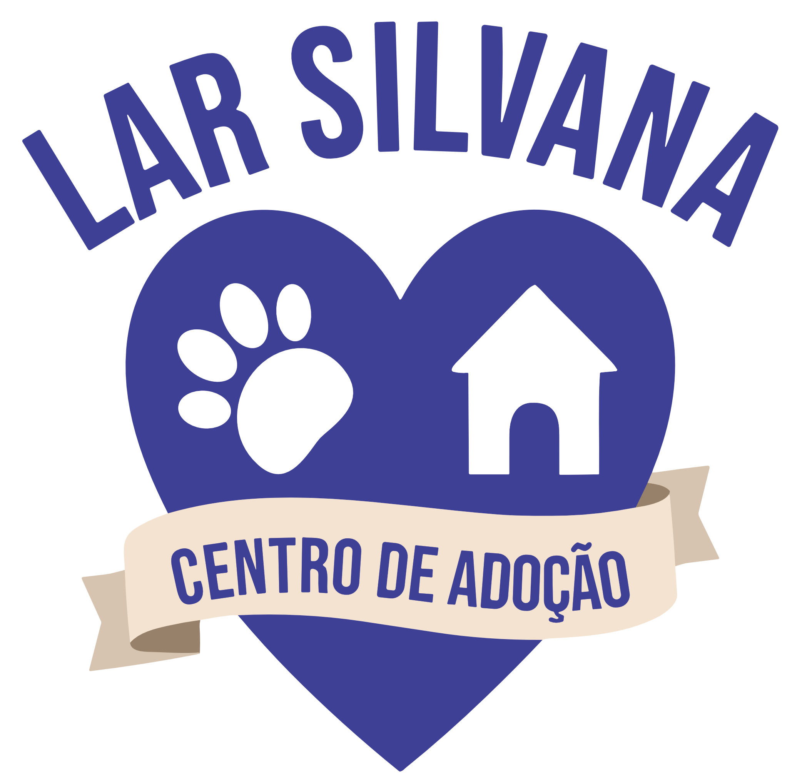
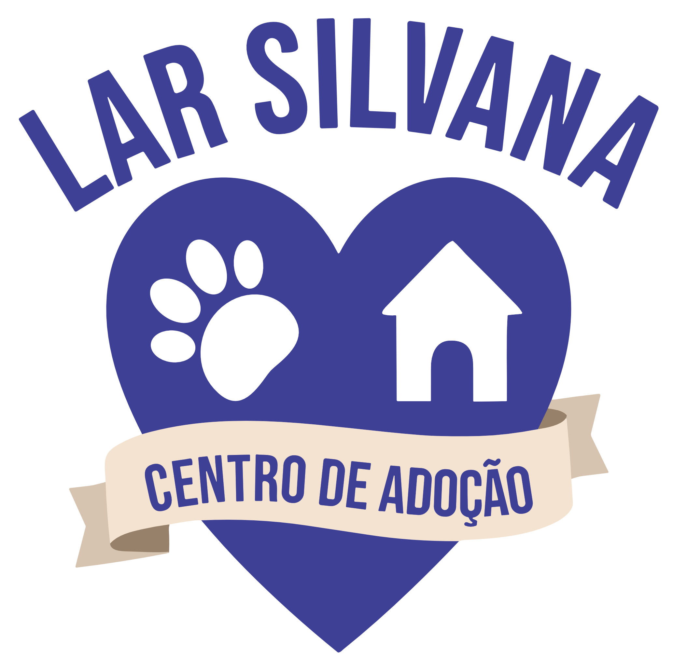
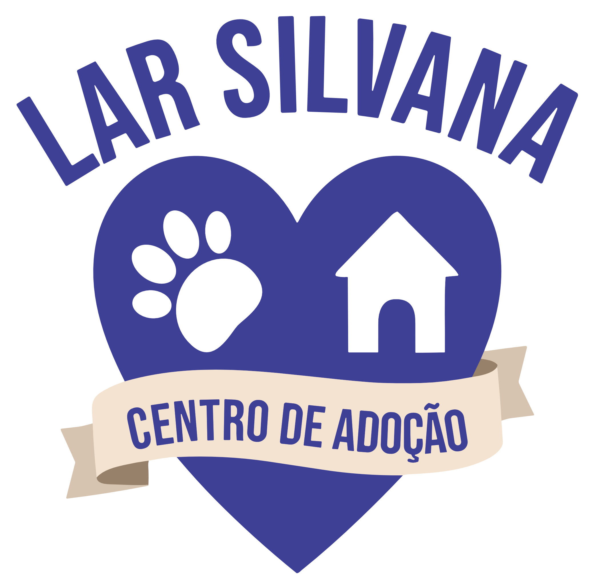
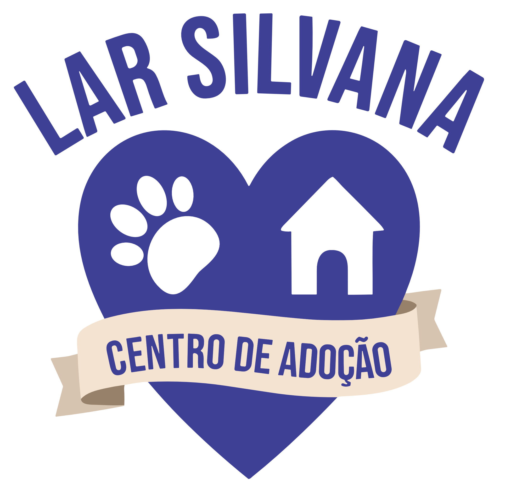

Somos um abrigo animal dedicado a resgatar e reabilitar animais abandonados, proporcionando-lhes uma segunda chance na vida. Com paixão e compromisso, trabalhamos incansavelmente para encontrar lares amorosos para nossos amigos de quatro patas. Junte-se a nós nessa jornada de compaixão, cuidado e esperança para transformar histórias de tristeza em contos de alegria duradoura. Faça parte da mudança!
Através de nosso formulário de adoção, você terá a oportunidade de compartilhar informações sobre seu estilo de vida e preferências para nos ajudar a encontrar o amigo de quatro patas perfeito para você.

Além disso, convidamos você a explorar nosso catálogo de animais em nosso site, onde pode conhecer os adoráveis residentes que estão ansiosos para encontrar um novo lar e fazer parte de sua família. Junte-se a nós nessa missão de amor e cuidado.